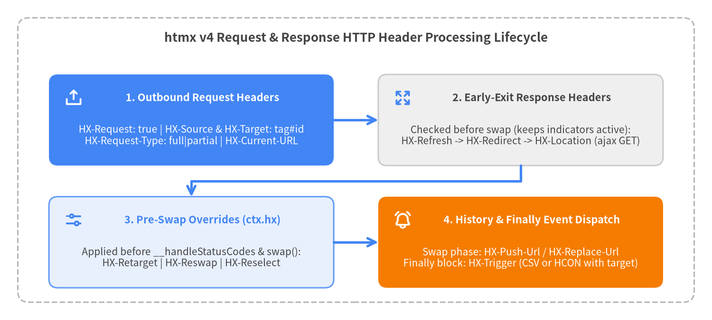

HTTP Request & Response Headers
htmx v4 communicates rich client context to the server via HX-* HTTP request headers and empowers the server to drive client-side navigation, DOM retargeting, history updates, and custom event dispatching via HX-* HTTP response headers. Compared to htmx 2, htmx v4 introduces HX-Request-Type ("full" vs "partial"), unifies element identifiers into tag#id format via HX-Source and HX-Target (replacing htmx 2's HX-Trigger request header and HX-Trigger-Name), and consolidates response event headers into HX-Trigger (removing HX-Trigger-After-Swap and HX-Trigger-After-Settle).
| Header | Direction | Value Format | Lifecycle Phase | Core Purpose |
|---|---|---|---|---|
HX-Request |
Request | "true" |
__createCoreHeaders |
Identifies every htmx-initiated HTTP request (Accept: text/html is also set). |
HX-Source |
Request | tag or tag#id |
__createCoreHeaders |
Identifies the element that triggered the request (replaces htmx 2's HX-Trigger request header). |
HX-Target |
Request | tag or tag#id |
__createRequestContext |
Identifies the resolved swap target element (__buildIdentifier(ctx.target)). |
HX-Current-URL |
Request | Full URL (location.href) |
__createCoreHeaders |
Reports the browser's current document URL when the request was initiated. |
HX-Request-Type |
Request | "full" | "partial" |
__issueRequest (pre-fetch) |
"full" when ctx.target === document.body or ctx.select is set; "partial" otherwise (new in htmx 4). |
HX-Boosted |
Request | "true" |
__createCoreHeaders |
Present when the request originates from an element enhanced by hx-boost. |
HX-History-Restore-Request |
Request | "true" |
__restoreHistory |
Present when htmx fetches a page during back/forward history traversal. |
HX-Trigger |
Response | CSV names or HCON / JSON | __issueRequest (finally) |
Dispatches custom DOM events on sourceElement or a specified detail.target after the request finishes. |
HX-Push-Url |
Response | "true" | "false" | URL Path |
__resolveHistoryAction |
Overrides hx-push-url to push a URL into history.pushState during swap. |
HX-Replace-Url |
Response | "true" | "false" | URL Path |
__resolveHistoryAction |
Overrides hx-replace-url to replace the current URL via history.replaceState during swap. |
HX-Redirect |
Response | URL String | __handleHeadersAndMaybeReturnEarly |
Aborts the swap and triggers a full-page browser navigation (location.href = url). |
HX-Location |
Response | URL Path or HCON / JSON | __handleHeadersAndMaybeReturnEarly |
Aborts the current swap and issues a client-side AJAX GET navigation via htmx.ajax(). |
HX-Refresh |
Response | "true" |
__handleHeadersAndMaybeReturnEarly |
Aborts the swap and reloads the entire page via location.reload(). |
HX-Retarget |
Response | CSS / Extended Selector | __issueRequest (pre-swap) |
Overrides ctx.target before hx-status:XXX evaluation and DOM swapping. |
HX-Reswap |
Response | Swap Specification String | __issueRequest (pre-swap) |
Overrides ctx.swap before hx-status:XXX evaluation and DOM swapping. |
HX-Reselect |
Response | CSS Selector | __issueRequest (pre-swap) |
Overrides ctx.select before hx-status:XXX evaluation and DOM swapping. |

Source Code
from drawlib.canvas import save, setup
from drawlib.icons import phosphor
from drawlib.lines import line, lines
from drawlib.shapes import rectangle
from drawlib.styles import Styles
from drawlib.text import text
setup(width=160, height=72, dpi=150)
# Outer container frame
rectangle((80, 36), width=152, height=64, style=Styles.MutedDashed.patch(shape_r=2.5))
text(
(80, 63.5),
"htmx v4 Request & Response HTTP Header Processing Lifecycle",
style=Styles.DarkBold.patch(text_size=12.5),
)
x_left = 43.0
x_right = 117.0
y_top = 45.0
y_bot = 17.5
card_w = 64.0
card_h = 20.5
# 1. Outbound Request Headers (Top-Left, Focal Point 1)
rectangle((x_left, y_top), width=card_w, height=card_h, style=Styles.PrimaryFlat.patch(shape_r=2.0))
phosphor.upload_simple((x_left - 26.5, y_top + 5.0), width=4.4, style=Styles.WhiteBold)
text((x_left + 2.5, y_top + 5.0), "1. Outbound Request Headers", style=Styles.WhiteBold.patch(text_size=10.5))
text(
(x_left, y_top - 3.5),
"HX-Request: true | HX-Source & HX-Target: tag#id\nHX-Request-Type: full|partial | HX-Current-URL",
style=Styles.White.patch(text_size=10.0),
)
# 2. Early-Exit Navigation Headers (Top-Right, Neutral)
rectangle((x_right, y_top), width=card_w, height=card_h, style=Styles.Neutral.patch(shape_r=2.0))
phosphor.arrows_out((x_right - 26.5, y_top + 5.0), width=4.4, style=Styles.PrimaryBold)
text((x_right + 2.5, y_top + 5.0), "2. Early-Exit Response Headers", style=Styles.DarkBold.patch(text_size=10.5))
text(
(x_right, y_top - 3.5),
"Checked before swap (keeps indicators active):\nHX-Refresh -> HX-Redirect -> HX-Location (ajax GET)",
style=Styles.Dark.patch(text_size=10.0),
)
# 3. Pre-Swap Overrides (Bottom-Left, PrimaryNeutral)
rectangle((x_left, y_bot), width=card_w, height=card_h, style=Styles.PrimaryNeutral.patch(shape_r=2.0))
phosphor.sliders_horizontal((x_left - 26.5, y_bot + 5.0), width=4.4, style=Styles.PrimaryBold)
text((x_left + 2.5, y_bot + 5.0), "3. Pre-Swap Overrides (ctx.hx)", style=Styles.PrimaryBold.patch(text_size=10.5))
text(
(x_left, y_bot - 3.5),
"Applied before __handleStatusCodes & swap():\nHX-Retarget | HX-Reswap | HX-Reselect",
style=Styles.Dark.patch(text_size=10.0),
)
# 4. Swap History & Finally Triggers (Bottom-Right, Focal Point 2)
rectangle((x_right, y_bot), width=card_w, height=card_h, style=Styles.AccentFlat.patch(shape_r=2.0))
phosphor.bell_ringing((x_right - 26.5, y_bot + 5.0), width=4.4, style=Styles.WhiteBold)
text((x_right + 2.5, y_bot + 5.0), "4. History & Finally Event Dispatch", style=Styles.WhiteBold.patch(text_size=10.5))
text(
(x_right, y_bot - 3.5),
"Swap phase: HX-Push-Url / HX-Replace-Url\nFinally block: HX-Trigger (CSV or HCON with target)",
style=Styles.White.patch(text_size=10.0),
)
# Flow connectors
line((x_left + 32.0, y_top), (x_right - 32.0, y_top), arrow_head="->", style=Styles.PrimaryBold)
lines([(x_right, y_top - 10.25), (x_right, 31.25), (x_left, 31.25), (x_left, y_bot + 10.25)], arrow_head="->", style=Styles.PrimaryBold)
line((x_left + 32.0, y_bot), (x_right - 32.0, y_bot), arrow_head="->", style=Styles.PrimaryBold)
save()
Request Headers#
HX-Request#
Sent on every HTTP request initiated by htmx, always carrying the string value "true". Server frameworks inspect HX-Request to distinguish htmx AJAX requests from direct browser page loads (alongside Accept: text/html, which htmx sets by default in __createCoreHeaders).
Syntax & Signature
HX-Request: true
Accept: text/html
Header Specification
| Property | Value / Behavior in src/htmx.js |
|---|---|
| Header Name | HX-Request |
| Value | Always "true" |
| Set During | __createCoreHeaders(sourceElement) before hx-headers and htmx:config:request. |
Pairing with HX-Request-Type |
Combine HX-Request with HX-Request-Type ("full" vs "partial") to decide whether to render a full HTML layout or an isolated fragment. |
Practical Examples
# Python (FastAPI / Starlette) server check
@app.get("/contacts")
def list_contacts(request: Request):
is_htmx = request.headers.get("HX-Request") == "true"
req_type = request.headers.get("HX-Request-Type") # "full" or "partial"
if is_htmx and req_type == "partial":
return templates.TemplateResponse("contacts/_table.html", {"request": request})
return templates.TemplateResponse("contacts/index.html", {"request": request})
HX-Source#
Identifies the DOM element that triggered the request (ctx.sourceElement), formatted by __buildIdentifier(elt) as lowercase tag or tag#id (with encodeURI(elt.id)). Replaces both HX-Trigger (request header) and HX-Trigger-Name from htmx 2.
Syntax & Signature
# Triggered by <button id="save-btn" hx-post="/save">
HX-Source: button#save-btn
# Triggered by <form hx-post="/save"> without an id attribute
HX-Source: form
Identifier Formatting Rules (__buildIdentifier)
| Element Markup | Sent HX-Source Value |
Notes |
|---|---|---|
<button id="submit-order" hx-post="/order"> |
button#submit-order |
Lowercase tag name + # + URI-encoded id. |
<input type="search" name="q" hx-get="/q"> |
input |
When elt.id is empty, only the lowercase tag name is sent (name is not included). |
htmx.ajax('GET', '/data') (no source option) |
body (or body#<id>) |
Defaults sourceElt to document.body. |
Practical Examples
<!-- Two buttons sharing the same endpoint, distinguished on the server via HX-Source -->
<form hx-post="/articles/42">
<input type="text" name="title" value="htmx v4 Guide">
<button id="btn-draft" type="submit" hx-post="/articles/42">Save Draft</button>
<button id="btn-publish" type="submit" hx-post="/articles/42">Publish Now</button>
</form>
HX-Target#
Identifies the resolved target DOM element (ctx.target) where the response will be swapped, formatted by __buildIdentifier(ctx.target) as lowercase tag or tag#id.
Syntax & Signature
# When hx-target="#search-results" matches <div id="search-results">
HX-Target: div#search-results
# When hx-boost="true" defaults target to document.body
HX-Target: body
Resolution & Formatting Rules
| Target Configuration | Sent HX-Target Value |
Internal Mechanics (__createRequestContext) |
|---|---|---|
Explicit hx-target="#results" |
div#results (assuming <div id="results">) |
Set after ctx.target = this.__resolveTarget(sourceElement, ctx.target). |
Default target (no hx-target or hx-boost) |
Same as HX-Source (tag or tag#id) |
Because ctx.target defaults to sourceElement. |
Boosted element (hx-boost="true") |
body (or body#<id>) |
Boosted elements default ctx.target to document.body. |
Unmatched selector (ctx.target == null) |
(Header omitted) | Only set when if (ctx.target) is truthy. |
Practical Examples
<!-- Server can inspect HX-Target to tailor the returned component structure -->
<button hx-get="/notifications" hx-target="#BadgeCounter">Refresh Count</button>
<button hx-get="/notifications" hx-target="#DrawerList">Open Drawer</button>
HX-Current-URL#
Contains the browser's full current URL (window.location.href) at the moment the request context is created. Useful on the server for analytics, relative redirect resolution, or rendering context-sensitive navigation state.
Syntax & Signature
HX-Current-URL: https://app.example.com/projects/12/settings?tab=security#keys
Header Specification
| Property | Value / Behavior in src/htmx.js |
|---|---|
| Header Name | HX-Current-URL |
| Value | location.href (includes origin, pathname, query string, and hash fragment if present in location.href). |
| Set During | __createCoreHeaders(sourceElement). |
Practical Examples
POST /Language/Switch HTTP/1.1
HX-Request: true
HX-Current-URL: https://app.example.com/docs/getting-started
HX-Source: button#lang-ja
HTTP/1.1 200 OK
HX-Redirect: https://app.example.com/ja/docs/getting-started
HX-Request-Type#
New in htmx v4. Indicates whether htmx expects a full page document or an isolated HTML fragment. Computed in __issueRequest() immediately before firing htmx:before:request:
ctx.request.headers["HX-Request-Type"] = (ctx.target === document.body || ctx.select) ? "full" : "partial";
Syntax & Signature
# Targeted fragment swap (e.g. hx-target="#list" without hx-select)
HX-Request-Type: partial
# Boosted page navigation or request using hx-select="#content"
HX-Request-Type: full
Value Determination Matrix
Condition (__issueRequest) |
HX-Request-Type Value |
Server Rendering Recommendation |
|---|---|---|
ctx.target === document.body (e.g. hx-boost="true" or hx-target="body") |
"full" |
Return the full HTML page (or full <body> layout) — htmx will swap document.body and extract <title>. |
Boolean(ctx.select) is truthy (e.g. hx-select="#main") |
"full" |
Return the full HTML page — htmx relies on the full template being rendered so ctx.select can query and extract #main on the client. |
Any other ctx.target without ctx.select |
"partial" |
Skip outer layout wrappers (<html>, <head>, navbars) and render only the partial template for ctx.target. |
Practical Examples
<!-- Sends HX-Request-Type: partial -> Server renders only the <tr> rows -->
<button hx-get="/invoices?page=2" hx-target="#invoice-rows" hx-swap="beforeend">
Load More
</button>
<!-- Sends HX-Request-Type: full -> Server renders full page, htmx extracts #invoice-table -->
<a href="/invoices?status=paid"
hx-get="/invoices?status=paid"
hx-select="#invoice-table"
hx-target="#invoice-table"
hx-push-url="true">
Paid Invoices
</a>
HX-Boosted#
Sent with value "true" when the request was triggered by an <a> or <form> element enhanced via hx-boost.
Syntax & Signature
HX-Request: true
HX-Boosted: true
HX-Request-Type: full
HX-Target: body
Header Specification
| Property | Value / Behavior in src/htmx.js |
|---|---|
| Header Name | HX-Boosted |
| Value | "true" when this.__isBoosted(elt) is truthy; omitted otherwise. |
Relationship to HX-Request-Type |
Unless hx-target was overridden on the boosted element without hx-select, a boosted request targets document.body and therefore also sends HX-Request-Type: full. |
Practical Examples
<nav hx-boost:inherited="true">
<!-- Clicking sends HX-Boosted: true and HX-Request-Type: full -->
<a href="/analytics">Analytics</a>
</nav>
HX-History-Restore-Request#
Sent with value "true" when htmx issues an automatic GET request inside __restoreHistory() to restore the DOM during browser back/forward navigation.
Syntax & Signature
GET /projects/12 HTTP/1.1
HX-Request: true
HX-History-Restore-Request: true
HX-Request-Type: full
Header Specification
| Property | Value / Behavior in src/htmx.js |
|---|---|
| Header Name | HX-History-Restore-Request |
| Value | "true" (only present during __restoreHistory AJAX fetches). |
| Client Swap Context | Dispatched via this.ajax('GET', path, { target: historyElt, swap: 'outerSync', select: historyElt !== document.body ? '[hx-history-elt],[data-hx-history-elt]' : undefined }). |
Practical Examples
# Server endpoint ensuring full page or [hx-history-elt] wrapper is returned on history restore
if request.headers.get("HX-History-Restore-Request") == "true":
return render_full_page(request)
Response Headers#
HX-Trigger#
Triggers one or more client-side DOM events inside the finally block of __issueRequest() after the response has been processed and swapped. In htmx v4, HX-Trigger-After-Swap and HX-Trigger-After-Settle have been removed — HX-Trigger handles all server-dispatched client events.
Syntax & Signature
# 1. Comma-separated event names (dispatched on ctx.sourceElement with empty detail {})
HX-Trigger: itemSaved, refreshMetrics
# 2. HCON or JSON object with event detail payload
HX-Trigger: {"showToast": {"message": "Saved!", "level": "success"}}
# 3. Targeting a specific DOM element via detail.target
HX-Trigger: {" reloadTable": {"target": "#orders-table", "page": 1}}
Parsing & Dispatch Rules (__handleTriggerHeader)
| Header Value Format | Target Element | Event detail Passed to htmx.trigger() |
|---|---|---|
Plain / CSV String ("evtA, evtB") |
ctx.sourceElement (or document if disconnected) |
{} (empty object) for each trimmed event name. Events bubble up through document.body and document. |
Object with Primitive Value ('{"countUpdated": 42}') |
ctx.sourceElement |
{ value: 42 } (non-object values are wrapped in { value: detail }). |
Object with Detail Object ('{"toast": {"msg": "OK"}}') |
ctx.sourceElement |
{ msg: "OK" }. |
Object with detail.target ('{"refresh": {"target": "#grid"}}') |
htmx.find(detail.target) |
Resolves detail.target via this.find(detail.target) (supporting extended selectors) and dispatches the event directly on that element. |
Practical Examples
<!-- Client listens for server-sent HX-Trigger event on body or via detail.target -->
<table id="contacts-table"
hx-get="/contacts/rows"
hx-trigger="contactsChanged from:body">
...
</table>
<div hx-on:show-toast="from:body"
hx-on="show-toast from:body -> showNotification(event.detail.message)">
</div>
HX-Push-Url#
Instructs htmx to push a URL into the browser's session history stack (history.pushState({htmx: true}, '', path)) during htmx.swap(), overriding any hx-push-url or hx-replace-url attribute on the triggering element.
Syntax & Signature
# Push the final request/response URL into browser history
HX-Push-Url: true
# Push a specific canonical URL path
HX-Push-Url: /invoices/2026-0042
# Prevent URL pushing (e.g. when returning an inline validation error on a boosted form)
HX-Push-Url: false
Value Resolution (__resolveHistoryAction)
| Header Value | Behavior |
|---|---|
"true" |
Pushes url.pathname + url.search + (#anchor) derived from `response.raw.url |
Custom URL / Path ("/items/9") |
Pushes the exact string into history.pushState({htmx: true}, '', path). |
"false" |
Suppresses history pushing (cancels hx-push-url or hx-boost default push). |
Practical Examples
POST /articles HTTP/1.1
HX-Request: true
HTTP/1.1 201 Created
HX-Push-Url: /articles/htmx-v4-deep-dive
Content-Type: text/html
<article id="main-article">...</article>
HX-Replace-Url#
Instructs htmx to replace the current browser history entry (history.replaceState({htmx: true}, '', path)) during htmx.swap(), overriding any hx-replace-url or hx-push-url attribute on the element.
Syntax & Signature
# Replace current URL with the request/response URL
HX-Replace-Url: true
# Replace current URL with a specific step or filter URL
HX-Replace-Url: /checkout?step=shipping
# Disable history replacement
HX-Replace-Url: false
Value Resolution (__resolveHistoryAction)
| Header Value | Behavior |
|---|---|
"true" |
Replaces the current entry with url.pathname + url.search + (#anchor) from `response.raw.url |
| Custom URL / Path | Calls history.replaceState({htmx: true}, '', path) with the provided path. |
"false" |
Suppresses history replacement (note: when HX-Replace-Url is present on the response without HX-Push-Url, push is cleared to undefined). |
Practical Examples
POST /search/save-preset HTTP/1.1
HX-Request: true
HTTP/1.1 200 OK
HX-Replace-Url: /search?preset=saved_77
Content-Type: text/html
<div id="preset-banner">Preset saved!</div>
HX-Redirect#
Triggers an immediate full-page browser navigation to the specified URL (window.location.href = ctx.hx.redirect) after htmx:after:request (and htmx:response:error if status >= 400), skipping DOM swapping entirely.
Syntax & Signature
HTTP/1.1 200 OK
HX-Redirect: /login?expired=1
Execution Mechanics (__handleHeadersAndMaybeReturnEarly)
| Aspect | Behavior in src/htmx.js |
|---|---|
| Execution Order | Checked second inside __handleHeadersAndMaybeReturnEarly(ctx) (immediately after HX-Refresh and before HX-Location). |
| Swap Suppression | Returns true, causing __issueRequest() to set ctx.keepIndicators = true and return before htmx.swap(ctx). |
| Indicator Persistence | Because ctx.keepIndicators = true is set, active hx-indicator spinners and hx-disable states remain active while the browser unloads the page. |
Practical Examples
POST /session/logout HTTP/1.1
HX-Request: true
HTTP/1.1 200 OK
HX-Redirect: /welcome
HX-Location#
Performs a client-side AJAX redirect without a full page reload by invoking htmx.ajax('GET', path, opts) and skipping the current response's swap. Accepts either a plain URL path string or an HCON / JSON configuration object.
Syntax & Signature
# 1. Simple URL path (pushes URL to history and swaps into document.body by default)
HX-Location: /dashboard
# 2. HCON configuration string
HX-Location: path:/dashboard/metrics, target:#metrics-panel, swap:outerMorph, push:false
# 3. JSON configuration object
HX-Location: {"path": "/users/42", "target": "#main", "select": "#profile", "swap": "innerHTML"}
Supported HCON / JSON Options (__handleHeadersAndMaybeReturnEarly)
| Option Key | Type / Default | Behavior Passed to htmx.ajax('GET', path, opts) |
|---|---|---|
path |
string (Required in object form) |
The destination URL for the follow-up GET request (delete opts.path before calling ajax). |
target |
CSS / Extended selector (Default: document.body) |
Element where the follow-up GET response will be swapped. |
swap |
Swap spec string (Default: htmx.config.defaultSwap) |
Swap strategy for the follow-up request (innerHTML, outerMorph, etc.). |
select |
CSS selector | Extracts matching elements from the follow-up response. |
selectOOB |
OOB selector spec | Out-of-band extractions for the follow-up response. |
push / replace |
boolean | string (Default: push = 'true') |
If both opts.push and opts.replace are omitted, htmx defaults opts.push = 'true'. |
values / headers |
Object | Additional request values or headers merged into the follow-up GET request. |
source |
CSS selector | Source element for the follow-up request. |
| Indicator Hand-off | opts.indicators = ctx.indicators |
Carries over the active ctx.indicators and ctx.disabledElements arrays (ctx.keepIndicators = true) so spinners and disabled buttons stay active until the follow-up htmx.ajax() request completes! |
Practical Examples
POST /projects HTTP/1.1
HX-Request: true
HTTP/1.1 201 Created
HX-Location: {"path": "/projects/99", "target": "#app-main", "select": "#app-main", "swap": "outerMorph"}
HX-Refresh#
When set to "true", aborts the DOM swap and forces a full browser reload of the current page via window.location.reload().
Syntax & Signature
HTTP/1.1 200 OK
HX-Refresh: true
Execution Mechanics (__handleHeadersAndMaybeReturnEarly)
| Aspect | Behavior in src/htmx.js |
|---|---|
| Strict Value Check | Must be exactly ctx.hx.refresh === 'true'. Any other value is ignored. |
| Highest Priority | Evaluated first in __handleHeadersAndMaybeReturnEarly(ctx) before HX-Redirect and HX-Location. |
| Indicator Persistence | Sets ctx.keepIndicators = true so loading indicators remain visible while the browser reloads. |
Practical Examples
POST /settings/theme HTTP/1.1
HX-Request: true
HTTP/1.1 200 OK
HX-Refresh: true
HX-Retarget#
Overrides ctx.target with a new CSS or extended selector (#errors, closest .row, this, body) before status routing (__handleStatusCodes) and DOM swapping (htmx.swap).
Syntax & Signature
HTTP/1.1 422 Unprocessable Entity
HX-Retarget: #validation-banner
HX-Reswap: innerHTML
Execution Order & Interaction with hx-status:XXX
Step in __issueRequest |
Internal Code (src/htmx.js) |
Implication |
|---|---|---|
1. HX-Retarget Applied |
if (ctx.hx.retarget) ctx.target = ctx.hx.retarget; |
Replaces ctx.target with the selector string from the header. |
2. hx-status:XXX Applied |
this.__handleStatusCodes(ctx); |
Runs after HX-Retarget. If the element also has a matching hx-status:XXX="target:...", the client's hx-status target will overwrite ctx.target. |
| 3. Target Resolved in Swap | this.__resolveTarget(ctx.sourceElement || document.body, swapSpec.target || ctx.target) |
Resolves the selector relative to ctx.sourceElement (supporting extended selectors like closest form or find .errors). |
Practical Examples
POST /comments HTTP/1.1
HX-Request: true
HX-Target: div#comment-list
HTTP/1.1 400 Bad Request
HX-Retarget: #comment-form-errors
HX-Reswap: innerHTML
Content-Type: text/html
<p class="error">Comment body cannot contain external links.</p>
HX-Reswap#
Overrides ctx.swap with a new swap strategy and optional swap modifiers (innerHTML, outerMorph, none, beforeend scroll:bottom) before status routing and DOM swapping.
Syntax & Signature
HTTP/1.1 200 OK
HX-Reswap: outerMorph transition:true
Execution Mechanics
| Aspect | Behavior in src/htmx.js |
|---|---|
| Assignment | if (ctx.hx.reswap) ctx.swap = ctx.hx.reswap; (runs right before __handleStatusCodes(ctx) and this.swap(ctx)). |
| Modifier Support | Parsed by __parseSwapSpec(ctx.swap), supporting all hx-swap styles and modifiers (swap:, settle:, transition:, scroll:, show:, ignoreTitle:, strip:, focusScroll:, swapEmpty:, target:). |
| Suppressing Swap | Sending HX-Reswap: none skips the main swap while still processing any <hx-partial>, hx-swap-oob, and HX-Trigger headers in the response. |
Practical Examples
POST /cart/items HTTP/1.1
HX-Request: true
HTTP/1.1 200 OK
HX-Reswap: none
HX-Trigger: {"cartUpdated": {"count": 4}}
Content-Type: text/html
<hx-partial hx-target="#cart-badge" hx-swap="innerHTML">4</hx-partial>
HX-Reselect#
Overrides ctx.select (hx-select) with a CSS selector specifying which elements to extract from the response HTML fragment before inserting into the target.
Syntax & Signature
HTTP/1.1 200 OK
HX-Reselect: #updated-card-content
Execution Mechanics
| Aspect | Behavior in src/htmx.js |
|---|---|
| Assignment | if (ctx.hx.reselect) ctx.select = ctx.hx.reselect; (applied before __handleStatusCodes(ctx) and this.swap(ctx)). |
Extraction in __processMainSwap |
Runs let selected = fragment.querySelectorAll(ctx.select); and replaces fragment with a new DocumentFragment containing all matched nodes. |
Practical Examples
GET /reports/full-view HTTP/1.1
HX-Request: true
HX-Target: div#summary-widget
HTTP/1.1 200 OK
HX-Reselect: #kpi-summary-cards
Content-Type: text/html
<div id="full-report">
<div id="kpi-summary-cards">...</div>
<table id="detailed-ledger">...</table>
</div>